A calibrated uncertainty model that disentangles aleatoric and epistemic uncertainty to guide informative-path planning for robotic information gathering, validated on elevation-mapping benchmarks and a real-world AAV coastal marshland monitoring mission.
Author information withheld for double-blind review
Robotic Information Gathering (RIG) relies on the uncertainty quantification of an inference model to identify critical regions of a spatial field for efficient data collection. Gaussian Processes with stationary and nonstationary kernels have been widely adopted for this task, but existing RIG algorithms often struggle to capture prediction uncertainty accurately in real-world spatial data, where variability differs across locations — leading to poor map construction.
We propose the Fourier Evidential Regression Network (FERN), which provides calibrated uncertainty estimates and disentangles aleatoric uncertainty (observation noise) from epistemic uncertainty (lack of data). Learning uncertainty in this form enables RIG systems to generate high-fidelity maps.
Building on this, we propose an importance-sampling-based information-theoretic planning algorithm that exploits FERN's uncertainty decomposition to collect more informative data around high-error regions, ordering the resulting waypoints with a TSP solver and executing them along kinodynamically feasible trajectories.
We evaluate FERN on elevation-mapping tasks across eight geospatial environments, where it delivers better accuracy and uncertainty calibration than commonly used GP-based probabilistic models. Field experiments further demonstrate that FERN guides an Autonomous Aerial Vehicle (AAV) in collecting aerial imagery over a coastal marshland site, reducing elevation RMSE by 35% across three episodes.
FERN learns aleatoric and epistemic uncertainty jointly through second-order risk minimization over a Fourier residual network, producing closed-form total predictive variance at every query point.
An information-gain objective over total predictive variance captures both where the model lacks data and where the environment itself demands denser sampling.
Systematic resampling over the uncertainty map selects high-value waypoints, which an LKH-3 TSP solver and Bézier trajectory generator turn into a kinodynamically feasible route.
FERN outperforms state-of-the-art baselines across eight digital elevation environments and guides a real AAV marshland-monitoring mission, cutting RMSE 35% over three flight episodes.
FERN builds on Deep Evidential Regression (DER), which performs second-order risk minimization: instead of directly predicting a likelihood over the target $y$, the network predicts the parameters of a distribution over the likelihood itself. For regression, this is the conjugate Normal-Inverse-Gamma (NIG) family, parameterized by $(\gamma, \nu, \alpha, \beta)$. A neural network $\mathcal{F}_{\Phi}$ maps each spatial coordinate directly to these four evidential parameters.
This hierarchical model yields closed-form expressions for the predictive mean and for the two uncertainty components — no sampling or ensembling required at inference time.
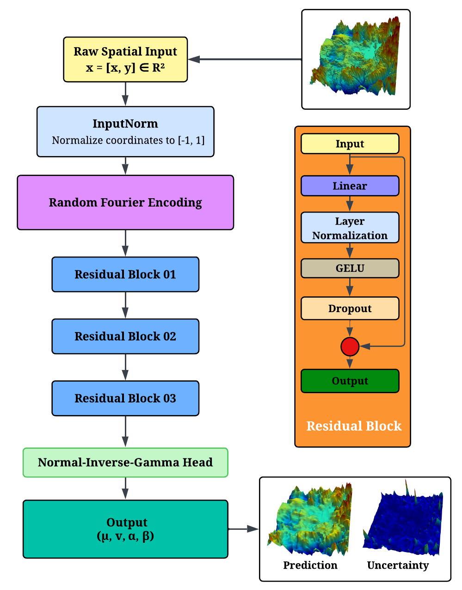
Spatial coordinates are min-max normalized, then lifted by a fixed random Fourier feature map before entering the residual backbone — a Fourier Feature MLP chosen to counteract the spectral bias of standard MLPs, which tend to over-smooth high-frequency spatial structure. The model is optimized with the evidential loss $\mathcal{L}_{\text{EDL}} = \mathcal{L}_{\text{NLL}} + \lambda\mathcal{L}_{\text{reg}}$, where the regularizer penalizes high evidence on incorrect predictions.
At each mission episode, FERN is fine-tuned from the previous episode's checkpoint rather than reinitialized, retaining previously learned field structure while a scaled-down learning rate and short linear warmup prevent loss spikes at episode boundaries. Because every episode trains on the entire cumulative dataset, the model continuously reconciles new evidence with prior structure as the mission advances.
After every model update, FERN's closed-form $\sigma_{\text{total}}$ map drives a two-stage active-sensing loop: importance-sampled waypoint selection, followed by minimum-length routing and kinodynamically feasible trajectory generation.
Because the evidence parameter $\nu$ grows only where data has been collected, low importance weights in previously sampled regions steer the planner away from revisits — without any explicit occupancy bookkeeping. Systematic resampling then evenly spreads the sensing budget across multiple high-uncertainty zones rather than collapsing onto a single mode, and the resulting waypoints are ordered into a minimum-length open path with the LKH-3 TSP solver before being converted into a smooth, kinodynamically feasible flight trajectory.
FERN is benchmarked against POAM, SSGP, and OVC across eight SRTM-derived digital elevation environments (Env1–Env8), each spanning a 31×31 m workspace with diverse terrain structure — from smooth basins with localized relief to ridge-dominated and high-frequency terrain.
| Env | FERN | POAM | SSGP | OVC | ||||||||
|---|---|---|---|---|---|---|---|---|---|---|---|---|
| RMSE | SMSE | MSLL | RMSE | SMSE | MSLL | RMSE | SMSE | MSLL | RMSE | SMSE | MSLL | |
| Env1 | 6.217±0.66 | 0.0093 | −2.408 | 13.460±0.26 | 0.043 | −1.597 | 184.9±63.0 | 9.016 | 6.333 | 16.740±0.53 | 0.067 | −1.352 |
| Env2 | 4.352±0.40 | 0.0091 | −2.293 | 7.999±0.23 | 0.031 | −1.783 | 83.20±20.99 | 3.501 | 8.488 | 9.968±0.74 | 0.048 | −1.512 |
| Env3 | 2.592±0.29 | 0.0035 | −2.659 | 5.709±0.24 | 0.017 | −2.075 | 134.9±55.3 | 10.740 | 22.870 | 9.581±1.74 | 0.049 | −1.536 |
| Env4 | 1.918±0.25 | 0.0014 | −2.852 | 3.999±0.42 | 0.006 | −2.597 | 224.1±54.1 | 20.110 | 34.250 | 9.499±1.38 | 0.035 | −1.711 |
| Env5 | 2.047±0.18 | 0.0016 | −2.900 | 4.066±0.18 | 0.006 | −2.593 | 163.6±65.6 | 11.220 | 25.650 | 6.191±0.26 | 0.014 | −2.127 |
| Env6 | 5.853±0.53 | 0.0300 | −1.707 | 13.840±0.30 | 0.167 | −0.926 | 218.0±86.5 | 47.200 | 5.244 | 16.850±0.34 | 0.247 | −0.697 |
| Env7 | 4.478±0.53 | 0.0074 | −2.444 | 10.240±0.33 | 0.038 | −1.678 | 253.7±168.9 | 32.370 | 8.224 | 14.800±0.53 | 0.080 | −1.269 |
| Env8 | 7.311±0.61 | 0.0161 | −2.129 | 16.970±0.49 | 0.086 | −1.245 | 154.6±60.0 | 8.126 | 2.579 | 20.540±0.52 | 0.126 | −1.034 |
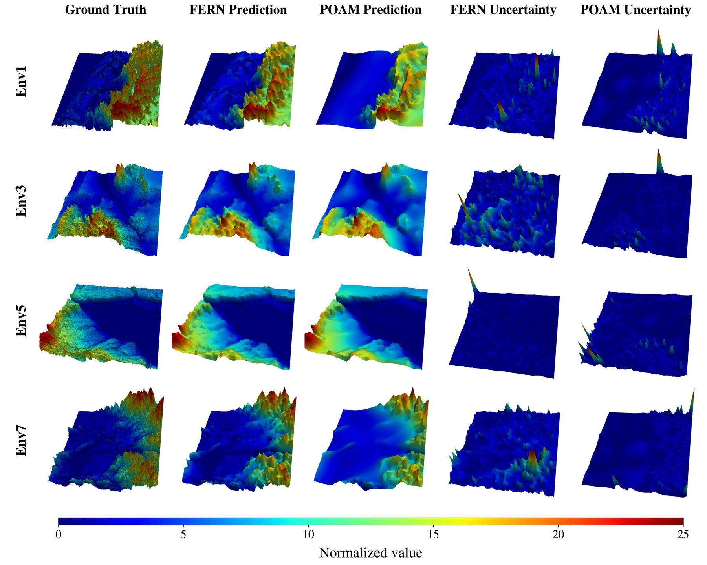
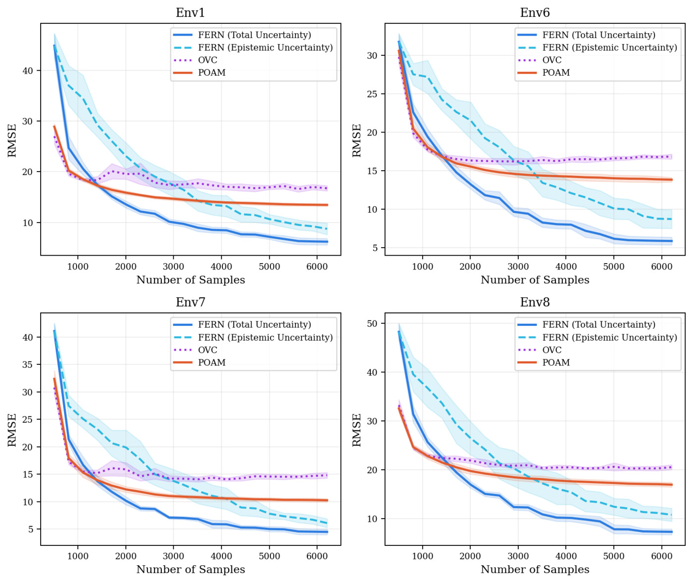
To isolate the contribution of uncertainty-guided planning from the backbone itself, FERN's importance-sampled, TSP-routed planner is compared against POAM's greedy single-goal MaxEntropy planner under an identical 3,600-second navigation time budget, holding the pilot survey, evaluation grid, sensing rate, and noise level fixed for both methods.
| Env | FERN | POAM | ||||
|---|---|---|---|---|---|---|
| RMSE | MSLL | Traj. Length | RMSE | MSLL | Traj. Length | |
| Env1 | 7.30±1.62 | −1.55 | 3392.2±4.0 | 14.55±0.29 | −1.87 | 3343.9±13.0 |
| Env2 | 5.20±0.41 | −1.55 | 3392.7±1.8 | 8.65±0.17 | −1.75 | 3352.6±21.6 |
| Env3 | 3.38±0.64 | −1.94 | 3392.2±2.9 | 7.71±0.50 | −1.95 | 3386.7±22.7 |
| Env4 | 2.87±0.65 | −2.24 | 3393.8±3.3 | 5.49±0.18 | −2.35 | 3377.5±14.6 |
| Env5 | 2.82±0.09 | −2.18 | 3392.7±2.9 | 5.55±0.29 | −2.38 | 3420.6±14.0 |
| Env6 | 5.45±0.58 | −0.55 | 3391.8±3.6 | 14.59±0.25 | −0.89 | 3387.3±13.2 |
| Env7 | 6.05±1.06 | −1.44 | 3390.5±3.3 | 12.82±0.30 | −1.75 | 3363.1±10.0 |
| Env8 | 7.04±1.60 | −0.93 | 3393.4±2.2 | 19.38±0.59 | −1.43 | 3329.2±17.3 |
FERN's trajectory lengths stay tightly clustered (∼3390–3394 m, std 2–4 m) across all environments, indicating stable, budget-saturating behavior, while POAM shows larger run-to-run variation. POAM's more conservative GP uncertainty intervals give it a modest MSLL edge in most environments, but FERN maintains substantially lower RMSE everywhere — evidence that uncertainty-guided batch planning, not just the backbone, is the primary driver of FERN's accuracy gains.
Real-time active-sensing missions over all eight SRTM benchmark environments — uncertainty-guided waypoint selection, TSP routing, and continual model refinement, episode by episode.
Smooth basin with localized high relief
Ridge-dominated terrain
Smooth basin with localized high relief
Sharp flat-basin to steep-terrain transitions
Sharp flat-basin to steep-terrain transitions
Enclosed, valley-like regions
Smooth basin with localized high relief
Dense, high-frequency surface variation
Active-sensing simulation over the USGS 3DEP coastal marshland raster, run before the physical flight to validate the waypoint mission
DJI Mavic Air flying the TSP-ordered, FERN-guided waypoint mission over the coastal marshland site
FERN's full active-sensing pipeline was deployed on an AAV over a 157×130 m coastal marshland site, using USGS 3DEP 1 m LiDAR as the baseline elevation reference. Battery life limited the flight to three episodes of 30 importance-sampled waypoints each, ordered into a 107-waypoint GPS mission at 35.2 m AGL with the LKH-3 TSP solver and flown autonomously by a DJI Mavic Air.
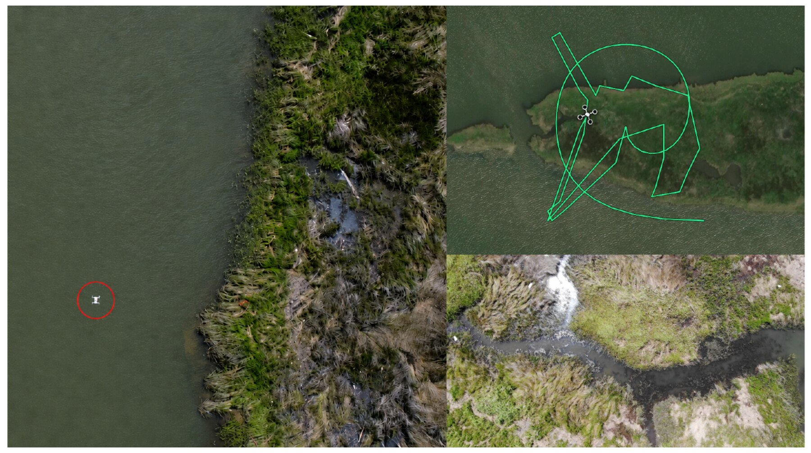
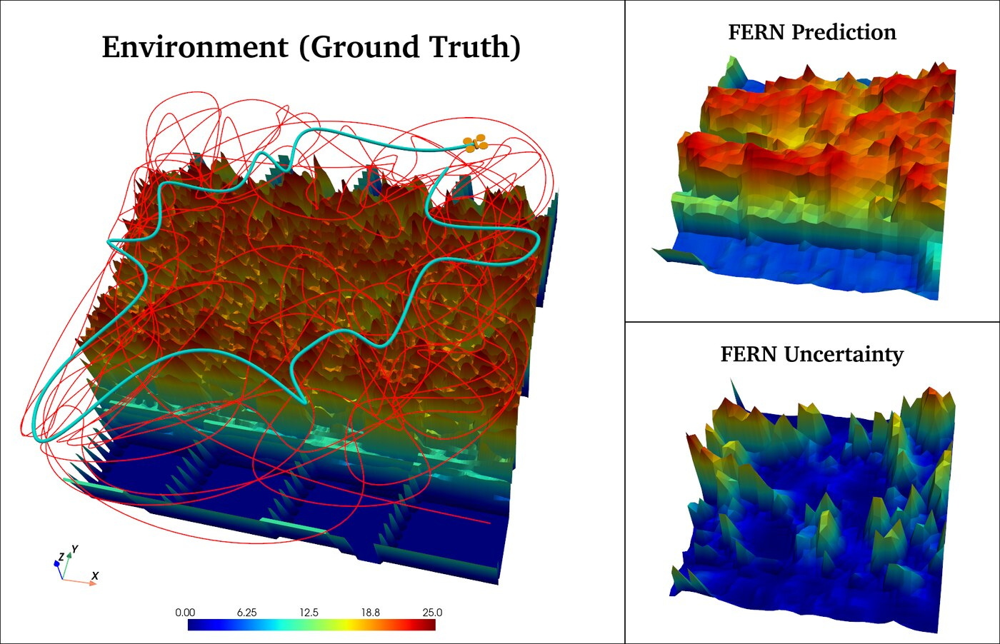
Eight SRTM-derived digital elevation tiles used for the simulation benchmark above.
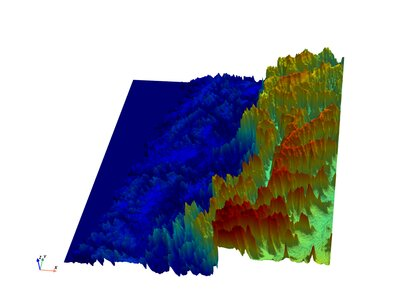
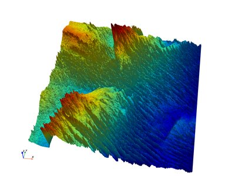
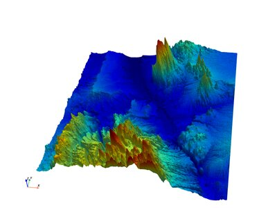
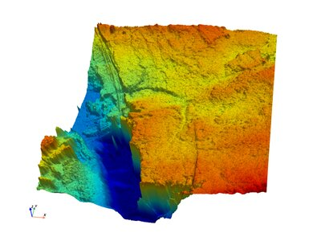
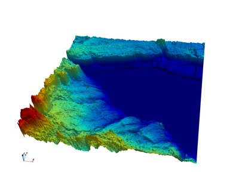
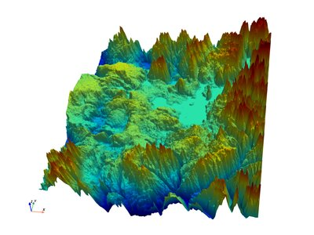
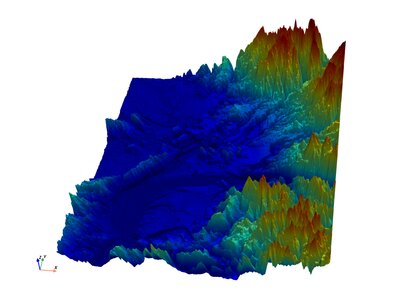
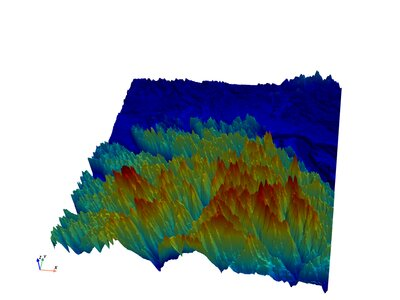